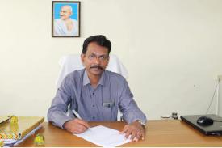
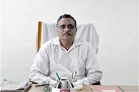
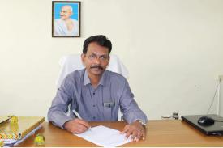
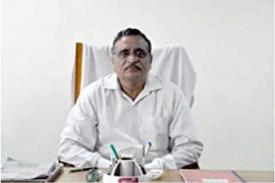

| s.no | name of the principal | image of the principal |
|---|---|---|
| 1 | DR.M.Natraj |  |
| 2 | DR.R.Vijayan |  |
| 3 | DR.M.Amala | |
| 4 | wahidabanu R.S.D |  |
| 5 | perumal |  |
| 6 | Muthumani | |
| 7 | DR.R.sathayabama |
Tamil Nadu Government has announced the proposal for Government College of Engineering, Sengipatti, Thanjavur during the finance year 2012-2013. And it has been running from August 2013 in Palace campus, Thanjavur. The permanent building for our institute has been built completely for 31046.8 sq feet at the cost of 49.38 crores. Our college has been located on 35.73 acres. Our institution consists of 30 classrooms, 35 laboratories and 5 workshops. Added to this it has a spacious auditorium and gyms for girls and boys separately.
Institution offers the following courses leading to the degree of B.E of the Anna University as follows
TamilNadu government has announced the proposal for Government College of Engineering, Sengipatti, Thanjavur during the finance year 2012 – 13. And it has been running from august 2013 in Palace campus, Thanjavur. The permanent building for our institute has been built completely for 31046.8 sq feet at the cost of 49.38 crores. Our college has been located on 35.73 acres. Our institution consists of 30 classrooms, 35 laboratories and 5 workshops. Added to this it has a spacious auditorium and gyms for girls and boys separately. Our institution offers the following courses leading to the degree of B.E of the Anna University as follows i)Civil Engineering ii)Mechanical Engineering iii) Electrical and Electronic Engineering iv) Electronic Communication Engineering v) Computer Science Engineering. Sixty students have been admitted for each branch every year. Students have achieved 65% pass percentage for the two academic years. Right now ours is a constituent college of Anna University. About 518 students have been studying in our college, inclusive of first and second year. The admissions have been conducted by Anna University by single window system (counselling). Our college is a boon for the people of Thanjavur and its suburbs. Government has allotted fund for the laboratories, Machineries and equipments are purchased regularly. Government scholarships are dispersed to the students properly. We thank our former C.M for establishing this college for the welfare of the student’s society.
| s.no | name of the principal | image of the principal |
|---|---|---|
| 1 | DR.M.Natraj | |
| 2 | DR.R.Vijayan |  |
| 3 | DR.M.Amala | |
| 4 | wahidabanu R.S.D | |
| 5 | perumal |  |
| 6 | Muthumani | |
| 7 | DR.R.sathayabama |